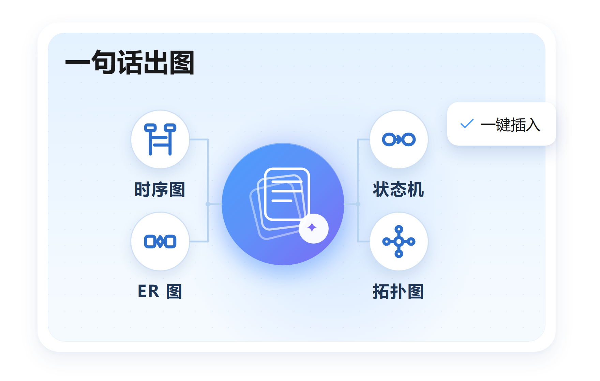
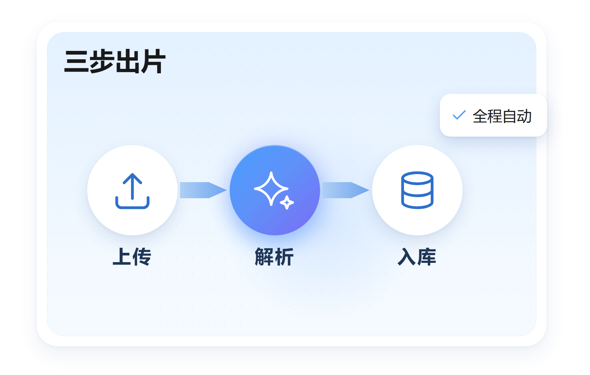

从 4 个产品线共 14 张原始场景图的逆向分析出发，把"用卡片和标签讲概念"换成"让图形自己说"。目标：仅凭一个标题，即可复现同一风格的场景图。
这不是"AI 生成的插画"，而是一套扁平矢量图形系统：图形直接落在淡蓝面板上、大图标与图形装置承载语义、渐变和投影负责分层、少数几根连线表达关系。
三句话记住它：无人物、无透视、无照片质感；没有内容白卡，图形直接落地；一张图只讲一件事，最多四处文字。

核心分支 · 三张错位叠页 + 四类产出
圆形流水线 · 三圆串联，中间块是唯一渐变体所有图共用同一套"外壳"，只有两层：白卡和淡蓝面板，逐层向右下偏移 8–14px。面板之上不再铺内容白卡，图形直接落在淡蓝底上，边界靠投影区分。
全图色相严格控制在 200°–250°，蓝与紫同族，视觉上视为一种颜色。饱和度集中在唯一一个渐变体（核心圆或核心瓦片），其余全是高明度低饱和底。
#E4F1FF#F5FAFF#4A9DFC#2E6FCB135° 三段#CFE0F4#A9C7EC#F58A8A#CFE0F4洁净 · 克制 · 可信 · 轻科技 —— 企业级 SaaS 技术说明书气质。靠结构与留白建立秩序，不靠色彩特效制造情绪。讲"怎么运作"而非"多酷"。无人、无表情、无戏剧性，可无限复用不疲劳。
中低，一图一件事。图形元素 ≤ 4 处，文字 ≤ 4 处。
核心图形占画布 50–55%，四角元素对称分布于外侧。
图形之间至少留一个图形半径的空隙，宁少勿挤。
图标是图形化的主力。全部 24×24 网格、圆头圆角、吃 currentColor，symbol 里不写 stroke-width——线宽由使用处的显示尺寸决定。
| 分组 | 数量 | 内容 |
|---|---|---|
| 图表 / 图示 | 25 | 时序图 · ER 图 · 状态机 · 拓扑 · 流程 · 树 · 看板 · 时间轴 · 节点图 · 柱线饼散点 · 仪表 · 雷达 · 九宫格 · 表格 · 思维导图 · 金字塔 · 漏斗 · 泳道 · 甘特 · 仪表盘 · 报告 · 日历 |
| 技术 / 基础设施 | 31 | 终端 · 代码 · 提交 · 分支 · 合并 · 缺陷 · 服务 · 云 · CPU · 数据库 · 存储 · 数据集 · 队列 · 接口 · 发布 · 伸缩 · 监控 · 全球 · 图层 · 立方 · 窗口 · 笔电 · 手机 · 文件夹 · 文件 · 盾 · 锁 · 密钥 · 实验 · 闪电 · 时钟 |
| AI / 智能 | 15 | 星芒 · 魔棒 · 机器人 · 神经网络 · 提示词 · 分词 · 向量 · 灯泡 · 靶心 · 火箭 · 麦克风 · 声波 · 视频 · 扫描 · 翻译 |
| 内容 / 协作 | 14 | 文档 · 书 · 图片 · 画框 · 链接 · 消息 · 上传 · 刷新 · 分享 · 用户 · 团队 · 通知 · 收藏 · 标签 |
| 交互 / 状态 | 15 | 光标 · 画笔 · 滑杆 · 开关 · 加号 · 右箭头 · 搜索 · 勾 · 完成 · 关闭 · 更多 · 播放 · 预览 · 警告 · 提示 |
<use href="icons.svg#i-database"> 这种外部引用，在 file:// 下会被浏览器按跨域拦掉——图标整片消失，而且不报错。<!--SPRITE--> 占位，跑 iconlib.py --pack 页面.html，只把这一页真正引用到的 symbol 塞进去。版式是拼出来的。以下零件都带 class 名和尺寸，完整实现在 assets/parts.html（基础 15 件）与 assets/parts-ext.html（扩展 15 件），浏览器打开即可见、可直接抄。一页最多 15 格，再多就分页——缩小格子会看不清。
.tile-grad
170–200 / r44
.sat / .badge-c
152–176
.float-b
320×128
.stackk
170×112
.arrow-g
平头 + 尖头
.ring-p
r54 / sw14
.bars
150×126
.dotgrid
间距 22
.prog
170×14 / r7
.st
22 + 7 光晕
.lrow
216×66
.glass
150×94 / r22
一个标题落到两种关系之一：一对多（一个核心能力，多类产出）或链式（几步串起来）。前者用 D，后者用 E。
核心圆 r180 居中，四个白圆徽章 r88 分布于 x470/1170 · y410/710，标签在徽章正下方。适合"一个能力辐射四类产出"。核心圆内放图形装置（错位叠页等），不是一个图标。
三圆 r135 等距（x395/820/1245 · y568），箭头 140×64 居中嵌在间隙，两侧各留 7px。中间那块是唯一渐变体，也是读者的第一落点。
| 标题特征 | 版式 | 模板 |
|---|---|---|
| 一个核心能力辐射多类产出 / 四种形态 | D 核心分支 | template-d-orbit.html |
| 2–4 步串联、上传→解析→入库这类流程 | E 圆形流水线 | template-e-pipeline.html |
图形化之后这一点更关键——图越抽象，模型越容易画错。圆要真正同距等大、箭头要正中嵌在缝里、2–3 字标签不能被画成伪文字。
# 复制模板 → 改四处文字 → 渲染 cp skill/hwcloud-scene-image/assets/template-d-orbit.html my-scene.html python skill/hwcloud-scene-image/scripts/render.py my-scene.html out.png # 输出的最后一步会自动跑连线几何校验 [4/5] 输出: out.png 1760x1120 404 KB [5/5] 检查连线 … 10 条线，15 个实体 所有端点都接上了